Horizon Zero Dawn
Aloy hunts mechanical predators across a lush post-apocalyptic wilderness.
Review
Horizon Zero Dawn arrived as one of the most surprising new IP launches of its generation. Guerrilla Games — previously known exclusively for the Killzone military shooter series — delivered a game of remarkable creativity: a world where humanity has regressed to tribal hunter-gatherer societies while enormous robotic animals roam the wilderness. The question of why the machines exist and what catastrophe erased the old world forms a mystery that drives one of gaming's most compelling investigative narratives.
Aloy is an excellent protagonist: curious, capable, and driven by a deeply personal search for identity and belonging. The archery-based combat system — using different arrow types to exploit machine weak points, tear off armor, or override machines to fight for you — is creative and satisfying. Stalking a Thunderjaw through tall grass before luring it into a trap feels genuinely like a high-stakes hunt. The skill tree offers meaningful choices, and the crafting system rewards thorough exploration.
The open world is gorgeous — from sun-drenched savannahs to frozen mountain passes — and Guerrilla's environmental artistry remains stunning years later. Where it falls short is in the quality of its side quests, which rarely match the intrigue of the main story, and in some NPC writing and animation that feels notably stiffer than its peers. But as a debut open-world RPG from a studio reinventing itself, it is an enormous achievement. The sequel, Forbidden West, improves on nearly every dimension.
Strengths and Limits
- World-building mystery is one of the most compelling in gaming
- Machine combat is inventive — using weakness exploitation feels genuinely skillful
- Aloy is a well-drawn, likeable protagonist
- Environments are visually stunning throughout
- Override mechanic — turning machines into allies — is a constant delight
- Side quests are generic and rarely match the main story's quality
- Some NPC dialogue and animation feels stiff relative to peers
- Climbing feels limited compared to games with more vertical traversal
- Story resolution leaves some threads frustratingly open for the sequel
Reader Fit
This review is written around fit: who should play it, what kind of session it rewards, and what friction might make it wrong for another reader. A high grade does not mean every player should buy it immediately. It means the game has a clear identity, a strong reason to exist, and enough craft to justify attention from the right audience.
Official Store Links
Editorial Method
This page is part of a cleaned Envizion publishing set. It is written for a reader who wants a practical decision, not a search-engine doorway. The page uses an original local SVG cover made inside this project, summarizes the strongest points directly, and keeps the limits visible. Where the topic depends on changing stores, patches, follower counts, or platform behavior, the page treats those details as estimates and points readers toward checking the current official profile or store before making a final decision.
The goal for this game review page is to add enough context that a visitor can leave with a useful conclusion. It avoids imported stock images, copied articles, and placeholder entries. If a note is only a short draft or generated filler, it is kept out of the sitemap until it has a real editorial reason to exist.